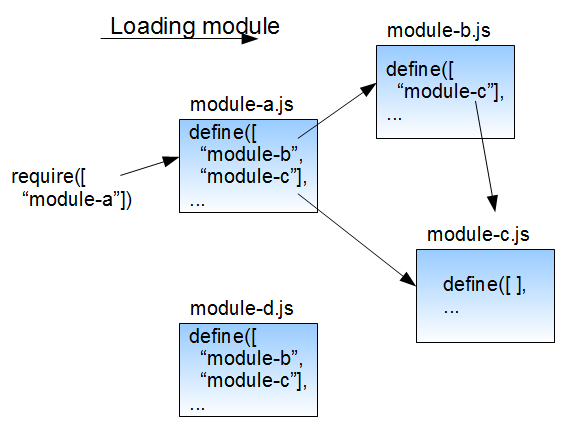

We Framework
We Framework
We Framework是盛大在线Web产品部在开发各种业务流程时所采用的一套前端框架解决方案。 以一个Loader为核心，自动获取当前最新的代码版本，并且根据业务的需求加载对应的代码。 实现以最简单的方式接入，并且无需后续维护。
同时，通过Loader，您可以调用我们的框架中提供的任意功能，从强大的js组件、动画库，到丰富多彩的插件， 到盛大在线的各种业务功能（比如盛大用户的绑定手机功能）。 只需要非常简短的引用和极低成本的学习，就可以享受上述的所有功能！
由于项目本身涉及公司业务，并未开源全部代码。但是如果有任何 BUG 或者任何 想跟我们讨论的， 可以直接在 Github Issues页面 发布issue，我们非常乐于得到您的任何回馈。
简介
引用We Framework只有一个文件:
<html>
<head>
<!--<script src="https://somewhere/jquery.js"></script>-->
<script type="text/javascript"
src="https://we.sdoprofile.com/common/js/release/loader.min.js" ></script>
</head>
...关于依赖
We Framework依赖于jQuery，而我们的Loader会做如下判断：
- 如果在调用Loader之前已经有jQuery被加载，那么Loader会直接使用这个jQuery
- 如果在调用Loader之前并无jQuery，Loader会自动加载一个自己CDN下的jQuery
** 如果您是第一次查看此文档，并且在考虑是否要使用We Framework，您可以移步 谁正在使用 来查看正在使用的网站以及他们的使用状况。
** 如果您只想使用盛大在线业务流组件，请移步至 业务流程组件，从中选择您需要使用的组件。
注意：此文档有很多例子可以 直接被运行，点击代码右上角的运行按钮即可。
alert("按我运行");
接口描述
$we.require$we.require(module, [callback])
引用一个或多个模块，module 为模块名称（字符串）或者模块名称的数组，callback的传参是每个引用的模块返回值。
$we.require(["module.a", "module.b"], function(a, b) {
var modA = a; // a为模块A的返回值
var instanceB = b(); // b为模块B的返回值
});
var original_arr = [1,2,3,4,5,6,7,8,9,10];
$we.require("core/array", function(arr_module) {
// arr_module是core/array模块的返回
// arr_module.rand 是生成随机数组的方法
alert(arr_module.rand(original_arr));
});
$we.preload$we.preload(module)
预加载一个或多个模块，module 为模块名称（字符串）或者模块名称的数组。
由于有些页面希望在用户操作之前，现将可能要加载的模块预先加载，那么可以使用这个函数来预加载模块。
$we.biz.use$we.biz.use(name, [data], [callback], [config])
使用一个业务流程（例如绑定手机）：
name 为业务名称，
data 为业务相关数据，如sdid等，没有可填写 {}，
callback 为流程成功之后的回调函数，
config 为该业务流程的具体表现层配置，比如流程浮层的宽度、流程名称等
$we.biz.use("bind_mobile", {}, function() {
alert("绑定成功了！");
}, {
// width: 600,
// prev: false,
// next: "下一步",
// end: "完成",
// title: "手机绑定"
});
具体业务流程的名称和使用请参见：业务流程组件
注意：出于安全考虑，如果您想使用业务流程功能，请向我们申请权限，默认情况下，我们并不允许在任意站点使用该功能。 请联系 章光达 或者 张子航。
$we.biz.announce$we.biz.announce(name)
预加载一个业务流程模块，name 为业务流程名称。
由于有些页面希望在用户操作之前，现将可能要加载的模块预先加载，那么可以使用这个函数来预加载模块。
$we.requireCss$we.requireCss(url)
加载一个css文件，url 为css的地址。
$we.requireCss("https://some/css/files");
模块说明
核心方法类模块
除了jQuery的核心方法，We Framework也拥有自己的一些核心方法：
注： 使用核心方法需要 require "core" 模块，也即：
$we.require("core", function() {
// 这里是调用核心方法的代码
});
组件类模块$we.widget.reg, $we.widget.add
组件是We Framework的一个核心模块，其目的是将各种固定的公共，业务类需求沉淀下来，形成组件。
统一管理其HTML，事件响应，以及组件之间的相互调用和继承关系。
组件模块本身是一个Widget类，每个新注册的组件都是该Widget类的继承，可以继承这个类的各种基础函数和性质。
详细的组件说明请参考： 组件类模块
业务流程模块$we.biz.use(name, [data], [callback], [config])
业务流程模块是基于SDO繁杂的业务流程需求而定制的模块。
该模块将各种业务流程打散成步骤，将各种步骤实现成为一个组件，而设计每一个流程则是将各个不同的组件（步骤）串联起来。
同时，通过内置的beforeAction条件的判断来实现流程的分支，跳跃。
详细的业务流程请参考：业务流程组件
CodeRunner$we.require("component/coderunner")
CodeRunner模块是在业务开发过程中，为了方便代码的调试和测试而形成的文档生成类模块。
通过极其简单的规则，就可以自动将页面转成需要的文档。文档支持：
- 支持三种语言的语法高亮: JavaScript,HTML,CSS
- 支持自动生成页面目录结构
- 支持编辑代码
- 支持运行代码，在编辑状态下，按
CTRL+R或者CMD+R运行当前代码- > JavaScript的运行是直接在当前环境下运行编辑器中的代码
- > HTML的运行会在代码下方添加一个div，并将编辑器中的代码添加到该div里
- > CSS的运行会在页面中直接添加一个style
- 支持页面打开后自动运行编辑器中的代码
- 支持
ALT+1,ALT+2跳转到对应的编辑器内并且聚焦 - 支持整理代码
- 在编辑状态，按
CTRL+S或者CMD+S可以直接保存代码到本地（需要对应的PHP脚本）
使用方法：
通过 $we.require 引入CodeRunner模块：
$we.require("component/coderunner");
每个部分/模块由一个 textarea 包起来，一切配置通过设置该 textarea 的属性来完成。
其中，需要对该 textarea 加上一个属性 attr="coderunner"。
其它属性还包括：
class: 该模块的语言，可选有: html,javascript,css，默认 javascript
title: 该模块的标题
autorun: 该模块是否需要自动运行
例如：
<textarea title="这个是标题" attr="coderunner"
class="javascript" autorun="true">alert(1);</textarea>
可以参考 CodeRunner 页面查看具体使用情况
RSA加密模块$we.rsa.encrypt(str)
JavaScript处理RSA加密：
$we.require("component/rsa", function() {
$we.rsa.publicKey =
"C99F5B2FA7880E5224BCA8B6E6EAAF03CF0AE7CC74D881B2C532C0346B743911";
$we.rsa.maxDigit = 131;
$we.rsa.encryptExp = "10001";
var plaintext = "Hello!";
alert($we.rsa.encrypt(plaintext));
});
对话框模块$we.widget.add("Dialog", [config])
WE 框架拥有固定的对话框样式，允许用户根据配置自行渲染一个对话框：
$we.require("component/dialog", function() {
var dialog = $we.widget.add("Dialog", {
width: 500,
mask: true,
title: "标题",
subTitle: "副标题",
close: true,
content: '<div style="text-align:center;line-height:50px;">'
+ '<h2>这是We Framework！</h2><p>你会爱上它的！</p></div>'
});
dialog.open();
});
事实上，我们也有一些已经预定制的对话框，Alert和Confirm：
$we.require("component/dialog", function() {
$we.comp.alert("欢迎使用We Framework！！！");
});
$we.require("component/dialog", function() {
$we.comp.confirm("你热爱中国么？", function() {
alert("好样的！");
}, function() {
alert("额，这是你的自由...");
});
});
表单类模块$we.widget.add("Form", element, [config])
针对Form表单，We Framework有一套统一的解决方案。
TODO
日期选择器模块$we.comp.datepicker.on(id)
这里使用了外站的一个日期选择器，可以通过简单的接口调用给input框添加日期选择功能。
例如：
请在此输入日期： 注：此 input 框的 id 为 dp-input
请执行下面代码之后，再点击 input 框查看效果。
$we.require("component/datepicker", function() {
// 以下为默认选项
// var d = new Date();
// $we.comp.datepicker.setOption({
// skin: "whyGreen",
// dateFmt: "yyyy-MM-dd",
// maxDate: [d.getFullYear(), (d.getMonth()+1), d.getDate()].join("-"),
// lang: "zh-cn"
// });
$we.comp.datepicker.on("dp-input");
});
密码强度校验模块$we.pwdStrength(pwd, [username])
在设置密码或者修改密码的时候，前端需要对密码的强度进行校验。
pwd 需要校验的密码
username 该用户的用户名
$we.require(["business/pwd_strength", "component/dialog"], function() {
var pwd = prompt("请输入您的密码：");
if (pwd) {
var result = $we.pwdStrength(pwd, "weframework");
var popMsg = "Result<br /> level|errno|msg:<br />"
+ [result.level, result.errno, result.msg].join("|");
$we.comp.alert(popMsg);
}
});
Array
rand$we.array.rand(arr, [len])
根据给定的数组和数位生成随机数组。
arr 数组
len 取出数组的前几位
Cookie
设置Cookie$.cookie(key, value, [options])
设置页面Cookie。options 可设置这些选项：expires, path, domain, secure
删除Cookie$.removecookie(key, [options])
删除页面Cookie。options 可设置这些选项：expires, path, domain, secure
Dom
getEvent$we.dom.getEvent()
通过此方法，可以获取当前执行函数的 event 对象，比如：
<a href="javascript:void(0);" onclick="we_test()">按钮</a>
如果在函数 we_test() 中需要获取 event 对象，可以使用这个方法。
$we.require("core", function() {
window.we_test = function() {
alert($we.dom.getEvent());
};
});
getTarget$we.dom.getTarget(event)
与上面的函数相关，但是获取的不是对象不再是 event 对象，而是触发 click 动作的 element。
这里我们复用上一个方法的按钮，请运行一下代码再试点击按钮。
$we.require("core", function() {
window.we_test = function() {
var target = $we.dom.getTarget();
$(target).addClass("btn-primary");
};
});
scrollTo$we.dom.scrollTo(to, [time], [callback])
滑动页面到某个区域。
$we.require("core", function() {
$we.dom.scrollTo(0, 300);
setTimeout(function() {
$we.dom.scrollTo("#Dom-scrollTo");
}, 1000);
});
$we.require("core", function() {
$we.dom.scrollTo("#dom", 1000);
});
$we.require("core", function() {
$we.dom.scrollTo($("#object"), 400, function() {
setTimeout(function() {
$we.dom.scrollTo("#Dom-scrollTo");
}, 1000);
});
});
imageLoaded$we.dom.imageLoaded(element, callback)
监测某个节点下的图片加载，等待加载完毕后调用回调函数。
Object
merge$we.object.merge(destination, source, [bCover])
将 source 对象的属性合并到 destination 中。对于属性重名的情况，如果 bCover 为
true，那么 source 对象的属性将会覆盖 destination 的已有属性。
bCover 默认为 true。
$we.object.merge({name : 'moe'}, {age : 50});
=> {name : 'moe', age : 50}
getValue$we.object.getValue(object, path)
从一个对象中，依据路径取出对应的属性。
例如：
$we.object.getValue({we:{joe:{ali:"Hi",ck:"Im"}}}, "we.joe.ck")
=> "Im"
$we.object.getValue({we:{joe:{ali:"Hi",ck:"Im"}}}, "we.jj")
=> undefined
String
getInt$we.string.getInt(str)
从一个字符串中获取里面的第一组数字
$we.string.getInt("这里有23个苹果")
=> 23
$we.string.getInt("这里有23个苹果和40个梨子")
=> 23
addStrNum$we.string.addStrNum(target, num)
将一个字符串内的数字增加一定数字
$we.string.addStrNum("这里有23个苹果", 1)
=> "这里有24个苹果"
$we.string.addStrNum("这里有23个苹果", -4)
=> "这里有19个苹果"
maskString$we.string.maskString(str, [symbol])
给字符串打上掩码。
$we.string.maskString("13752632812")
=> "137*****812"
$we.string.maskString("alice@gmail.com", "#")
=> "al###e@gmail.com"
replaceTmpl$we.string.replaceTmpl(str, conf)
字符串模板替换，模板字符使用 $ 包起来，参见这个例子：
$we.string.replaceTmpl("这个是$name$模板", {name: "We Framework"})
=> "这个是We Framework模板"
getHash$we.string.getHash()
获取页面地址的Hash。
alert($we.string.getHash());
setHash$we.string.setHash(str)
设置页面地址的Hash
$we.string.setHash("#String-setHash");
getQueryString$we.string.getQueryString([str])
获取Str的Query数组，str 不传则取当前页面地址
alert($we.string.getQueryString("https://abc.de?a=1&b=2"));
getQueryByName$we.string.getQueryByName(name, [str])
通过 name 获取Str的Query，str 不传则取当前页面地址
alert($we.string.getQueryByName("a","https://abc.de?a=1&b=2"));
getQueryByIndex$we.string.getQueryByIndex(index, [str])
通过 index 获取Str的Query，str 不传则取当前页面地址
alert($we.string.getQueryByIndex(1,"https://abc.de?a=1&b=2"));
validIdCard$we.string.validIdCard(str)
验证身份证的合法性。
var card = prompt("请输入身份证号码：");
if (card) {
if ($we.string.validIdCard(card)) {
alert("该身份证号码合法！");
} else {
alert("该身份证号码不合法！");
}
}
Utils
initNameSpace$we.utils.initNameSpace(router, root)
初始化命名空间
$we.utils.initNameSpace("a.b.c")
=> a = {b: {c: {}}}
request$we.utils.request(url, data, success, fail, [method], [isJsonp])
经过封装的HTTP请求方法，对于HTTP的返回结构有一定要求：
{"errno":0, "msg":"", "data":[1,2]}
url 请求的URL
data 请求的具体数据
success 请求成功的回调函数，请求成功要求返回结构合法，且 errno 为 0
fail 请求失败的回调函数，包括超时，返回结构不合法，errno 不为 0
method POST/GET
isJsonp 是否为JSONP请求
exec$we.utils.exec(code, [bTranslate])
执行一段 JavaScript 代码，与 eval 函数的区别在于，该代码的执行域是当前的 window。
也就是，通过 $we.utils.exec 执行的代码中的变量，会在当前页面中得到保存。
bTranslate 表示是否需要对 <, >, & 进行转译。
$we.utils.exec("var we_exec_test_trans = 'A & <B>';", true);
$we.utils.exec("var we_exec_test_untrans = 'A & <B>';");
alert(we_exec_test_trans + "\n" + we_exec_test_untrans);
setValue$we.utils.setValue(target, value)
给对象设置默认值，如果对象已经存在，则返回对象本身的值，否则，返回 value
$we.utils.setValue(undefined, 1);
=> 1
$we.utils.setValue("", 1);
=> ""
addStyleSheet$we.utils.addStyleSheet(string, [document])
给制定的 document 添加一个 styleSheet。
$we.utils.addStyleSheet("#Utils-addStyleSheet {color: red;}")
getFormElements$we.utils.getFormElements(element)
获取指定元素的表单元素，表单元素包括：input(text,checkbox,radio) select,textarea
TODO
var formList = $we.utils.getFormElements('#form');validForm$we.utils.validForm(element)
TODO
组件类
组件简介
组件是We Framework的一个特殊类，用来统一管理一个功能，或者一个模块的HTML，
事件响应，以及组件之间的相互调用和继承关系。
组件注册$we.widget.reg(name, option)
通过 $we.widget.reg 方法可以注册组件，比如：
$we.widget.reg("we_framework_test", {
init: function() {}, // init 为该组件的 constructor
run: function() {} // run 为该组件 constructor之后会被自动调用的函数，可不实现
});
组件使用$we.widget.add(name, [params], [params], ...)
实际调用一个组件的方式很简单：
$we.widget.add("we_framework_test");
组件节点管理
node 在组件的函数中调用 this.node 可以获取组件中的内置节点。
节点的声明方式一般为在 HTML 中嵌入这样的代码： <a href="" attr="inner:btn"></a>
组件接口
interfaces 组件在注册的时候，可以声明这个对象，interfaces 的每个属性为一个函数，作为组件被调用时的接口函数。比如：
interfaces: { show: function() { } }
组件事件处理
events 每个组件对其所管理的节点，HTML绑定事件，比如 <a href="javascript:void(0);" attr="click:speak"></a>
这个时候就需要在注册组件的时候声明：events: { speak: function() { } }
组件通知处理
TODO
组件的继承
TODO
业务流程组件
在页面中引用了 We Framework 的 Loader 之后，即可直接调用业务流程的所有方法。
除此之外，我们还提供 iframe 版本的业务流程组件：
<script src="https://we.sdoprofile.com/common/js/release/loader.min.js">
</script>
<script type="text/javascript">$we.biz.use("name")</script>
<!-- 或者使用 iframe -->
<iframe src="https://safe.sdo.com/iframe/process?
name=xx&theme=xx&width=xx&need_title=xx"></iframe>
JavaScript 方式的引用的说明，还可以参考 $we.biz.use
iframe 方式中：
name 表示组件的名称，将在下面逐一介绍
theme 表示组件选用的主题，目前有两个选择: red， blue
width 表示组件的总体宽度
need_title 表示组件是否需要标题区域，可选 0 或者 1
backurl 组件成功之后的回调地址
绑定手机$we.biz.use("bind_mobile", data, callback)
bind_mobile 盛大在线绑定手机服务。包含用户安全卡，密宝验证，以及风控策略。
相对的 iframe 地址为：
https://safe.sdo.com/iframe/process?name=bind_mobile
修改手机$we.biz.use("change_account_phone", data, callback)
change_account_phone 盛大在线修改某账号的安全手机服务。包含用户安全卡，密宝验证，以及风控策略。
相对的 iframe 地址为：
https://safe.sdo.com/iframe/process?name=change_account_phone
解绑手机$we.biz.use("unbind_mobile", data, callback)
unbind_mobile 盛大在线解绑安全手机服务。包含用户安全卡，密宝验证，以及风控策略。
相对的 iframe 地址为：
https://safe.sdo.com/iframe/process?name=unbind_mobile
绑定账号到手机群$we.biz.use("bind_account_to_mobile_group", data, callback)
bind_account_to_mobile_group 盛大在线手机账号管理体系绑定账号服务。包含用户安全卡，密宝验证，以及风控策略。
相对的 iframe 地址为：
https://safe.sdo.com/iframe/process?name=bind_account_to_mobile_group
修改手机群号码$we.biz.use("change_group_phone", data, callback)
change_group_phone 盛大在线手机账号管理体系修改手机群手机服务。包含用户安全卡，密宝验证，以及风控策略。
相对的 iframe 地址为：
https://safe.sdo.com/iframe/process?name=change_group_phone
从手机群中解绑账号$we.biz.use("unbind_account_from_mobile_group", data, callback)
unbind_account_from_mobile_group 盛大在线手机账号管理体系解绑账号服务。包含用户安全卡，密宝验证，以及风控策略。
相对的 iframe 地址为：
https://safe.sdo.com/iframe/process?name=unbind_account_from_mobile_group
绑定邮箱$we.biz.use("bind_email", data, callback)
bind_email 盛大在线绑定邮箱服务。包含用户安全卡，密宝验证，以及风控策略。
相对的 iframe 地址为：
https://safe.sdo.com/iframe/process?name=bind_email
修改邮箱$we.biz.use("change_email", data, callback)
change_email 盛大在线更换绑定邮箱服务。包含用户安全卡，密宝验证，以及风控策略。
相对的 iframe 地址为：
https://safe.sdo.com/iframe/process?name=change_email
修改密码$we.biz.use("modify_password", data, callback)
modify_password 盛大在线修改密码服务。包含用户安全卡，密宝验证，以及风控策略。
相对的 iframe 地址为：
https://safe.sdo.com/iframe/process?name=modify_password
通过手机修改密码$we.biz.use("modify_password_by_phone", data, callback)
modify_password_by_phone 盛大在线通过绑定手机修改密码服务。包含用户安全卡，密宝验证，以及风控策略。
相对的 iframe 地址为：
https://safe.sdo.com/iframe/process?name=modify_password_by_phone
快速划账$we.biz.use("account_transfer", data, callback)
account_transfer 盛大在线快速划账服务。包含用户安全卡，密宝验证，以及风控策略。
相对的 iframe 地址为：
https://safe.sdo.com/iframe/process?name=account_transfer
实名认证$we.biz.use("real_name_auth", data, callback)
real_name_auth 盛大在线实名认证服务。包含用户安全卡，密宝验证，以及风控策略。
相对的 iframe 地址为：
https://safe.sdo.com/iframe/process?name=real_name_auth
谁正在使用
splus.sdo.com
盛大在线用户账户中心，集成了账户的信息，安全等模块。

idplus.sdo.com
盛大在线手机账号管理页面，集成了该手机群下所有的账号的信息以及相关管理功能。

sj.sdo.com
盛大在线安全手机相关管理。

F.A.Q.
为什么使用We Framework？
We Framework与 jQuery, zepto 等库完美兼容。
整体理念清晰，极易上手。
并且We Framework采用独创的 Loader+Module 技术，实现如下功能：
- 调用方不关心框架版本升级等问题，只需要引用 Loader 文件，即可轻松使用框架内任何资源。
- Loader 文件本身非常小，并通过成熟的
requirejs框架实现模块加载，使得只有需要使用的代码才会被加载，极大的节约了网络开销并且提升了响应速度。 - 对于希望优先加载一部分资源的需求，同样有
$we.biz.announce等接口保证代码在最开始已经被加载。
We Framework其中提供了各种基础的函数服务，并且在不断的扩充中，用户只需要通过 $we.require 将相应模块加载进来，即可使用最新，最全的基础函数服务。极大的减少了用户的维护成本和开发成本。
框架还提供与盛大在线紧紧相关联的各种业务服务，对于希望使用这些业务服务的用户，最大成本的节约了开发成本。 只需要一两行代码，便可以完美引入。
什么是模块加载？
模块加载即根据初始定义的不同模块极其依赖关系，按照依赖顺序加载不同的模块的一种代码引入方式。
对于前端 JavaScript 来说，当代码量达到一定数量，并且实际应用场景只会使用到总代码中的一小部分的情况。
模块加载则显得尤为重要，下图是根据依赖关系来顺序加载模块的示意图：

如何扩展We Framework？
We Framework的扩展方式非常简单。
如果您需要开发新的 组件，那么只需要 $we.require("core", function() {}) 之后，
在其函数内进行组件的具体开发即可。如果有其它的依赖，则在 require 的依赖中注明相关依赖即可。
比如：
$we.require(["core", "component/dialog"], function() {
$we.widget.reg("new_dialog", {
init: function(config) {
this.extend("Dialog", config);
},
...
});
});
如何debug？
考虑到线上压缩代码难以调试，We Framework还提供一个简单的解决方案。在页面设置 cookie，
使得原本请求的压缩版本的代码，转而请求非压缩的代码。甚至，可以将请求的环境转移到 We Framework的开发环境。
这里，我们以使用 We Framework 自带的 Cookie 设置方式来做示范。
$.cookie("_we_debug", 1); // 使用非压缩代码
$.cookie("_we_force_dev", 1); // 使用开发环境的代码
更新日志
1.0.2 — 2013年1月15日
引入新的代码压缩方式，使得请求更加轻松。Fix Bugs。并且发布该文档。
1.0.1 — 2012年12月25日
We Framework引入 Loader 和 Module，对原有的函数进行大幅整理。
引入了许多新的函数和方法。
1.0.0 — 2012年10月12日
最初版本的 We Framework发布，初始版本不支持 Loader 和 Module，所有文件打成两个包，
引用地址为：
https://we.sdoprofile.com/common/css/compressed/we-1.0.0.min.css
https://we.sdoprofile.com/common/js/compressed/we-1.0.0.min.js